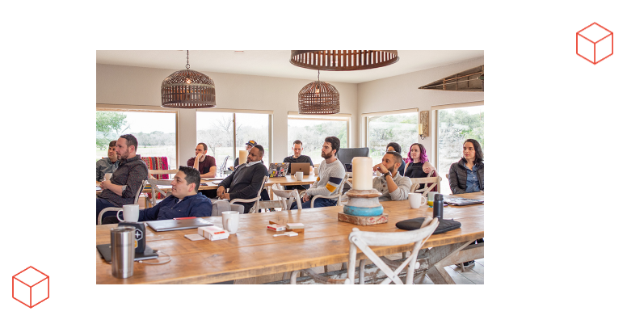

Informacion general Laravel
Informacion general Laravel
| Tipo de programa |
Framework |
| Desarrollador |
Taylor Ottwell |
| Modelo de desarrollo |
Código abierto |
| Lanzamiento inicial |
9 de junio de 2011 |
| Enlace |
Sitio web oficial |
Un poco de cronología...
Historia desde su lanzamiento
| Version |
Fecha de salida |
PHP Version |
| 1.0 |
Enero 2011 |
|
| 2.0 |
Septiembre 2011 |
|
| 3.0 |
Febrero 2012 |
|
| 3.1 |
Marzo 2012 |
|
| 3.2 |
Mayo 2012 |
|
| 4.0 |
Mayo 2013 |
5.3.0 |
| 4.1 |
Diciembre 2013 |
5.3.0 |
| 4.2
|
Junio 2014 |
5.4.0 |
| 5.0 |
Febrero 2015 |
5.4.0 |
| 5.1 LTS |
Junio 2015 |
5.3.0 |
| 6 LTS |
Septiembre 2019 |
≥7.2 y ≤8.0 |
| 7 |
Marzo 2020 |
≥7.2 y ≤8.0 |
| 8 |
Septiembre 2020 |
≥7.2 y ≤8.0 |
| 9 |
Febrero 2022 |
≥7.2 y ≤8.0 |
| 10 |
Febrero 2023 |
≥7.2 y ≤8.0 |
| 11 |
Enero 2024 |
≥7.2 y ≤8.0 |
